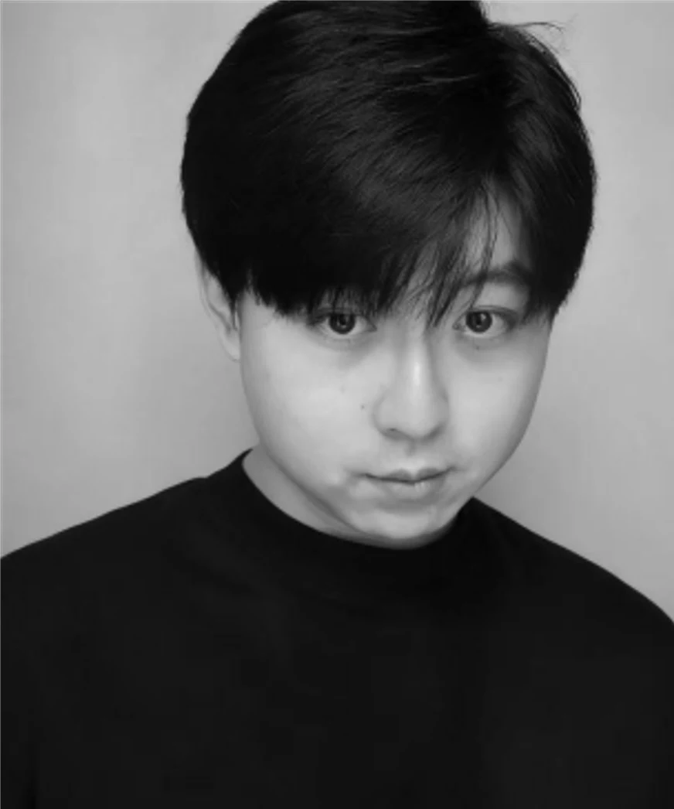

Media Artist 媒体艺术家
创作涉及影像、实验性游戏、交互装置与 Mapping 等。其作品取材于智能媒介的技术语言、算法治理的现场，以及不断被调试的文明参数，关注人、技术与世界在量产智能时代如何相互设定，并以沉浸式体验、虚构叙事和游戏化机制，探索这些设定被共同编辑的可能。
作品曾展出于林茨电子艺术节、亚洲国际 Mapping 大赛、上海张江科学之门双子塔、“重庆之夜”国际光影文化旅游季、阿那亚戏剧节候鸟 300、北京上上国际美术馆、西安丝路国际文化艺术中心、西安方所等。
Creative AI Builder 创意 AI Builder
把 AI 的能力带进真实的创作工作流，通过制作原型、评估模型、沉淀可复用的流程与工具，寻求将智能这一能源转化为创造力的最好方式。